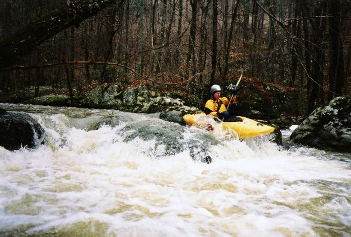
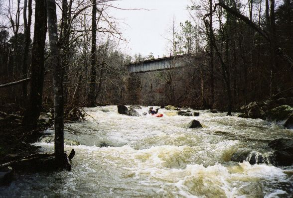
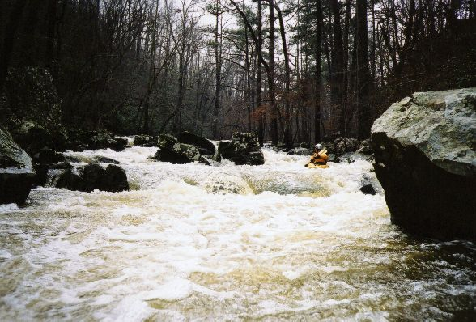
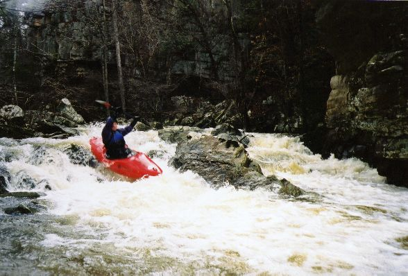
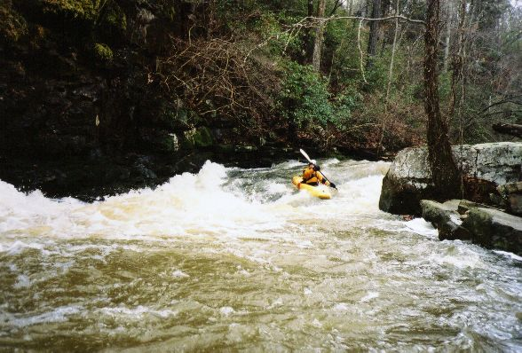

|  | Brian McAnally on a rapid at the beginning of Kelly |
|  | Greg Lawrence barely survives a treacherous class II boulder garden just below the railroad bridge :-) |
|  | Brian looks back at the playspot he just left at the bottom of one of the two best rapids. |
|  | Greg looks like a doofus here, which is too bad because he just got done catching major air off a boof. My shutter was too slow, and I would normally not use this shot, but it is make-up for him moving so much while he tried to take my picture on the previous rapid that he blurred the shot of me! You just can't get good help these days. |
|  | Brian on a slide towards the end of the good stuff. |